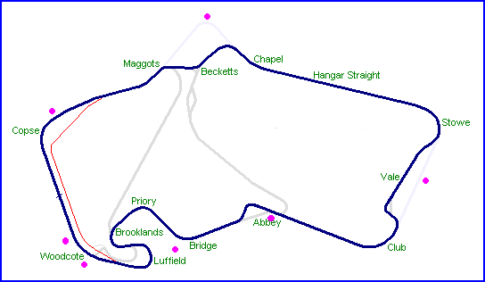
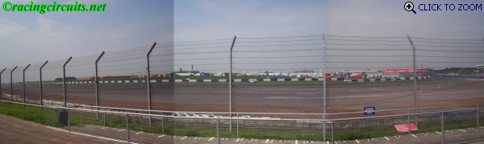
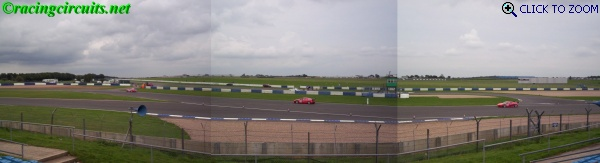
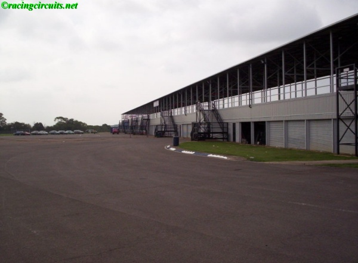

Silverstone - Panoramic Photo's
|| Panoramic Photos, Aug 04 | Aerial Photos, May 05 ||

Start/Finish Straight (289.5 kb - 2274x522)

Copse (282.5 kb - 1766x526)

Abbey (303.8 kb - 2061x561)
Woodcote (290.2 kb - 2514x303)

Pre-1991 Becketts corner
Photographs Taken: 14-15 August 2004
Return to racingcircuits.net's Photo Archive Main Index
©2004 Daniel King / racingcircuits.net. All rights reserved.